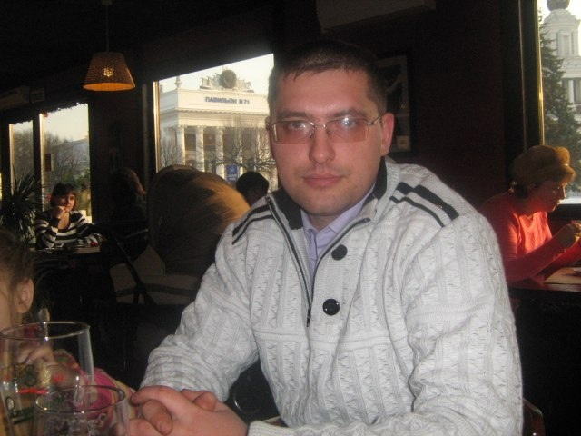
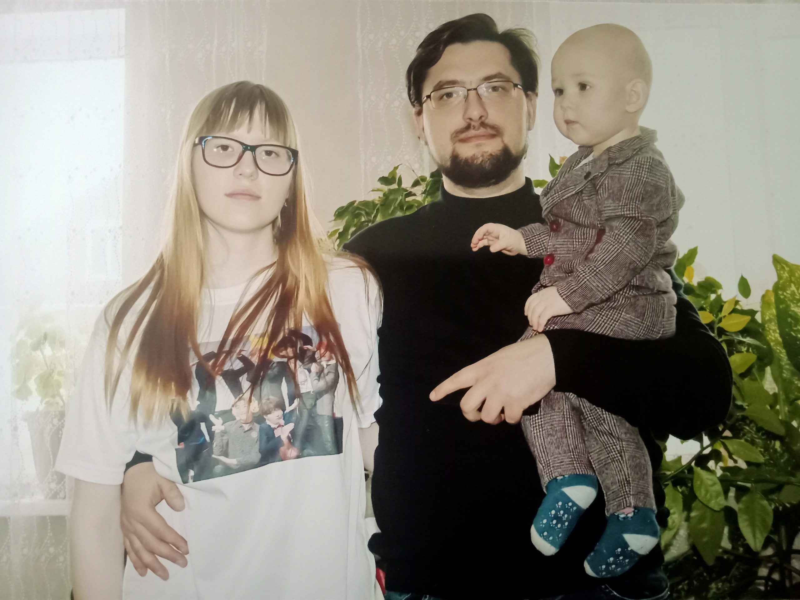
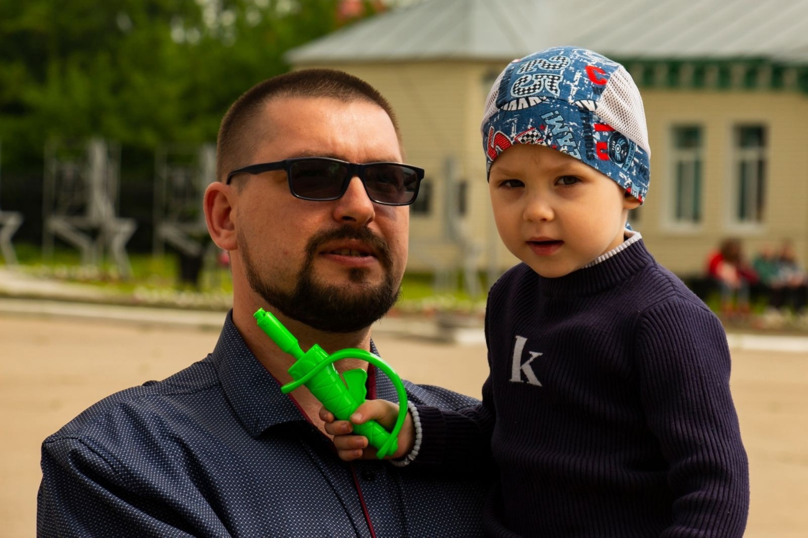
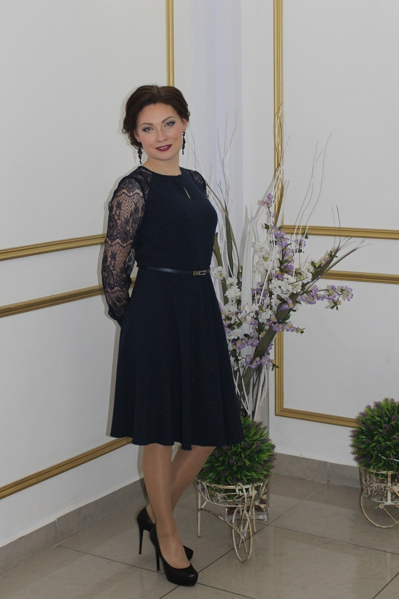
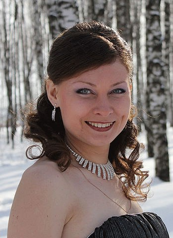
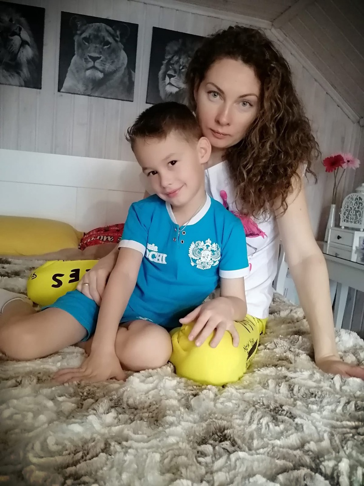
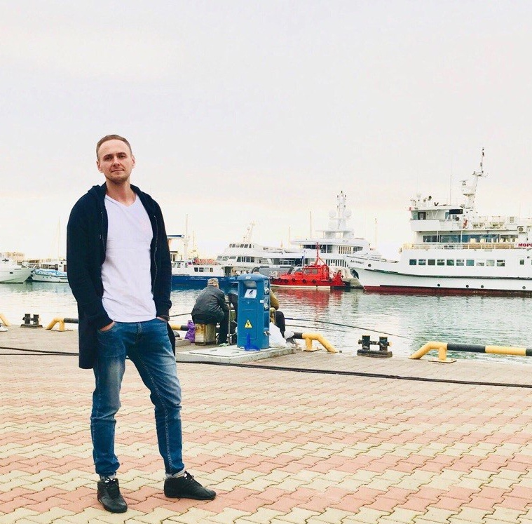
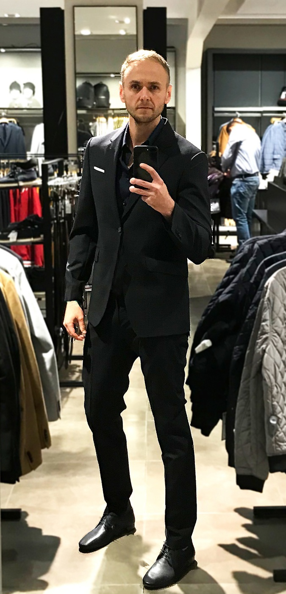

Выпускники 2004 года
Знакомьтесь: Денис Кривокульский выпускник 2004 года. И это опять САМЫЙ ПЕРВЫЙ набор специальности #Информационные_системы. Родом Денис из города Лукоянов Нижегородской области.
❗Высшее образование Денис получил в Нижегородском государственном техническом университете имени Р.Е. Алексеева
❗2004 - 2006 г. работал в Лукояновском райпо, должность: техник.
❗2005 - 2012 г. ПАО Сбербанк, должность: инженер
❗2012 - 2015 г. ООО Банковские Системы и Сервисы должность: инженер
❗с 2015 г. ООО "Сбербанк сервис" должность: старший инженер.
❗ На вопрос о ценностях в жизни отвечает - СЕМЬЯ!!!!
Очень рады видеть!!!! Ждем в гости!!!!



И так знакомимся. Выпускница 2004 года Староверова Ольга. И да, это опять САМЫЙ ПЕРВЫЙ выпуск специальности, который празднует свой юбилей #Информационные_системы_20лет.
❗С 2005 года работает в уголовно-исполнительной инспекции. Инспектор.
❗В 2008 году закончила заочно Международный юридический институт при Министерстве юстиции Российской Федерации г. Москва.
❗Сейчас:
✅Сергачский МФ ФКУ УИИ ГУФСИН России по Нижегородской области.
✅В должности начальника
✅В звании подполковника внутренней службы
✅Осуществляет: Контроль за осуждёнными без изоляции от общества.
❗ А еще Оля мама ТРОИХ детей старшая дочь и два сына😘!!!!! И это немалое достижение, Оленька!!!!!
Очень приятно встречать своих выпускников, спустя какое-то количество лет. Иначе как Оленька мы этого улыбчивого и всегда и во всем надежного человека мы не называли!!!! Ждем в гости и всегда рады видеть👍🏻!!!!!



И так знакомьтесь: Алексей Курносов выпускник 2004 года. Алексей учился в группе САМОГО ПЕРВОГО набора специальности #Информационные_системы. В то время специальность называлась Автоматизированные системы обработки информации и управления.
❗Высшее образование Алексей получил в Нижегородском государственном техническом университете имени Р.Е. Алексеева
❗с 2006-2010 г. работал в компании Formoza . К сферам деятельности компании относились: Компьютерные магазины, Ноутбуки и планшеты, Программное обеспечение.
❗с 2010 года и по сегодняшний день Алексей работает в Арзамасском научно производственном предприятии «Темп-Авиа», инженер.
❗А еще у Алексея есть хобби - граффити в цифровом формате ), на стенах не рисует!!!!!
Ждем в гости!!!! Рады видеть!!!!

